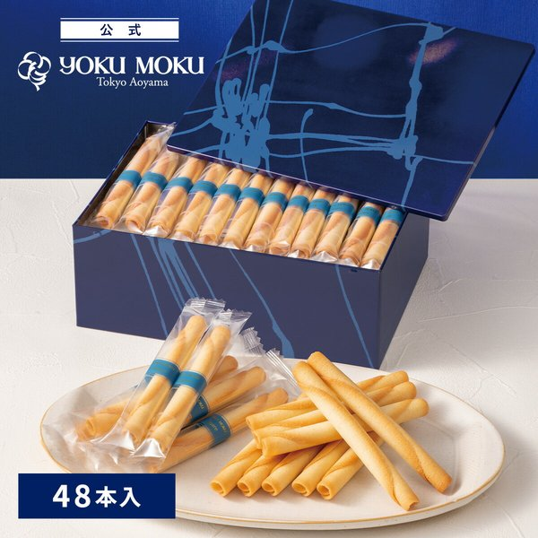
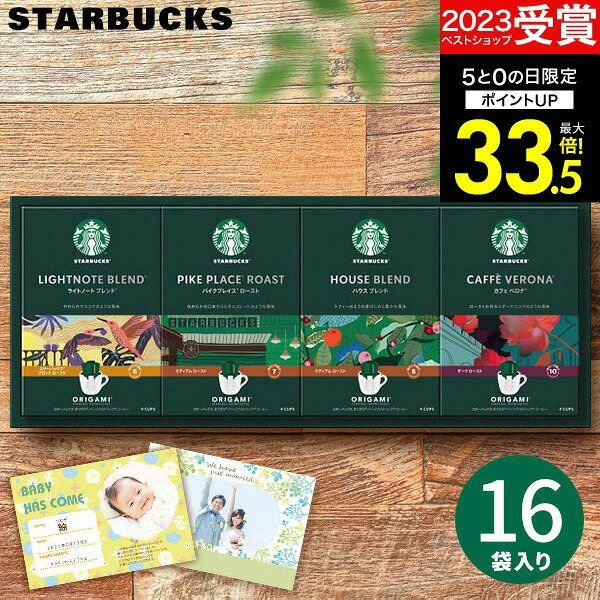
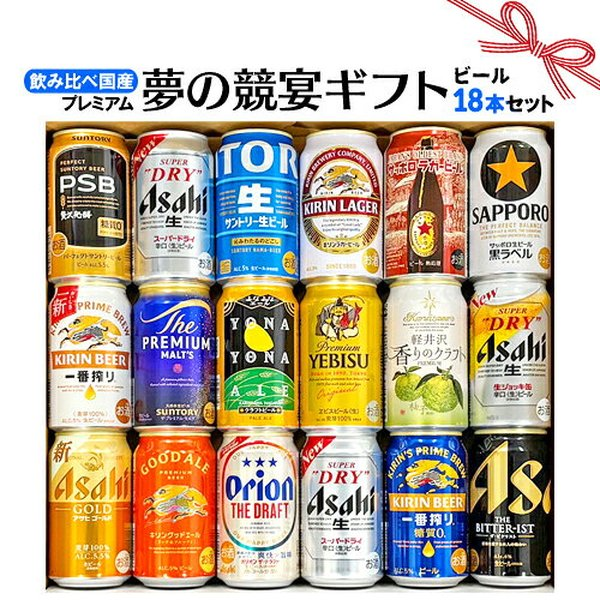
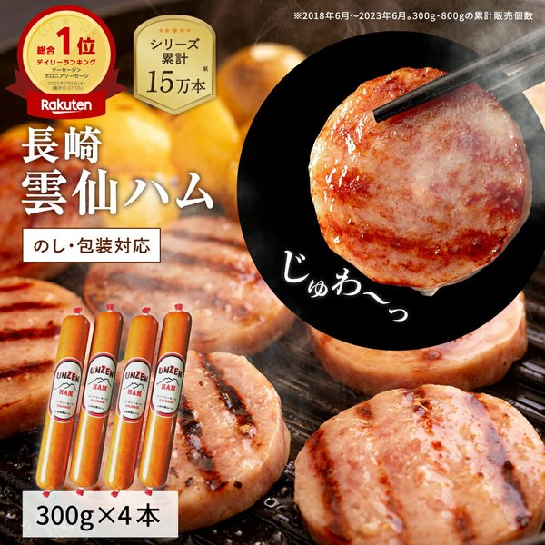
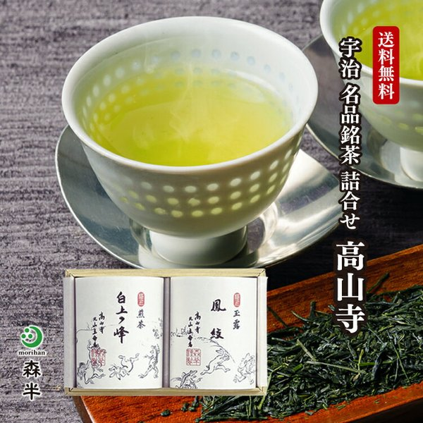
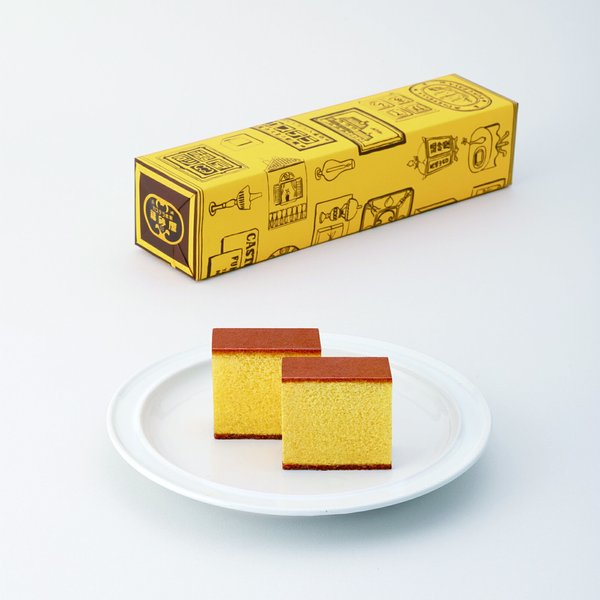
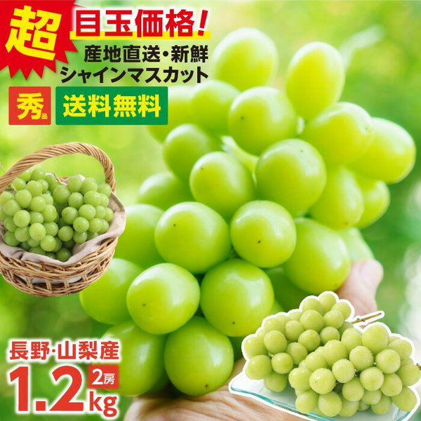
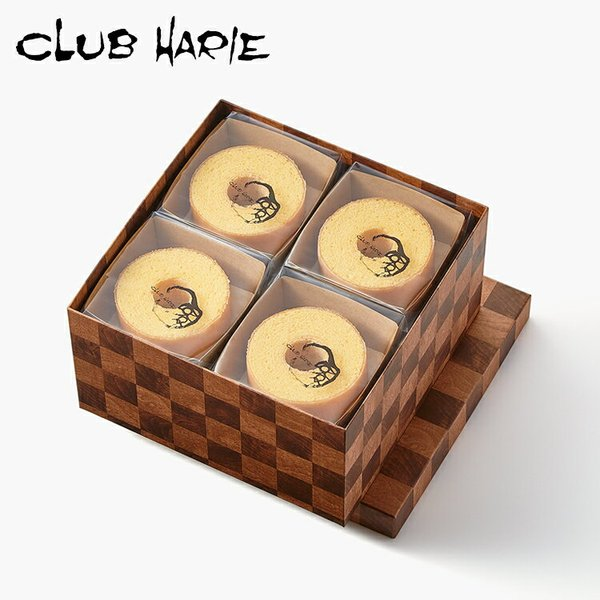

【2026年最新】お歳暮・冬ギフト＆手土産に！絶対に喜ばれる楽天人気グルメ・スイーツギフト10選
お歳暮の時期になると毎年悩むのが「何を贈れば喜ばれるか」。相手の好みが分からないときこそ、長く愛されている定番ブランドが強い味方になります。
今年は円安や物流の影響で、早めに売り切れるギフトも増えています。贈る相手と予算が決まったら、早めに確保しておくのが安心です。
本記事では、お歳暮・内祝い・ちょっとした手土産まで使える人気グルメ＆スイーツギフト10選を、実際の価格と評価つきで写真付き紹介します。
- おすすめ10選 スペック・特徴比較表
- BEST 1｜シガール 48本入 お歳暮・冬ギフト
- BEST 2｜銀座ゼリー 9個入り フルーツゼリー
- BEST 3｜オリガミ パーソナルドリップコーヒー 30袋 SBX-30B
- BEST 4｜夢の競宴 プレミアムビール飲み比べ 350ml×18本
- BEST 5｜茅乃舎だし だしパック30袋 2個セット
- BEST 6｜雲仙ハム 300g×4本セット（ボロニアソーセージ）
- BEST 7｜宇治 名品銘茶詰め合わせ 高山寺（玉露・煎茶）
- BEST 8｜カステラ本家 福砂屋 カステラ 小切れ0.6号
- BEST 9｜シャインマスカット 秀品 1.2kg（2房）
- BEST 10｜バームクーヘンmini 12個入（公式）
- 【読者負担0円】買わなくても得する無料サービス
- まとめ：生活をラクにする最初の一歩
| 順位 | 商品名 | ブランド | 最大の特徴・おすすめ理由 | 総合評価 |
|---|---|---|---|---|
| BEST 1 | シガール 48本入 お歳暮・冬ギフト | ヨックモック（YOKU MOKU） | 誰に贈っても外さない定番 | 4.59 ★ |
| BEST 2 | 銀座ゼリー 9個入り フルーツゼリー | 銀座千疋屋 | 老舗ブランドの安心感 | 4.65 ★ |
| BEST 3 | オリガミ パーソナルドリップコーヒー 30袋 SBX-30B | スターバックス（STARBUCKS） | 有名ブランドで贈りやすい | 4.67 ★ |
| BEST 4 | 夢の競宴 プレミアムビール飲み比べ 350ml×18本 | 国産プレミアムビール | 人気銘柄を飲み比べできる | 4.69 ★ |
| BEST 5 | 茅乃舎だし だしパック30袋 2個セット | 久原本家 茅乃舎 | 袋のまま入れるだけで本格だし | 4.84 ★ |
| BEST 6 | 雲仙ハム 300g×4本セット（ボロニアソーセージ） | 雲仙ハム | ボリュームがあって贈答映えする | 4.68 ★ |
| BEST 7 | 宇治 名品銘茶詰め合わせ 高山寺（玉露・煎茶） | 森半（宇治茶） | 老舗宇治茶の上質な味わい | 4.92 ★ |
| BEST 8 | カステラ本家 福砂屋 カステラ 小切れ0.6号 | 福砂屋 | 老舗の間違いない味 | 4.84 ★ |
| BEST 9 | シャインマスカット 秀品 1.2kg（2房） | 山梨・長野産 | 皮ごと食べられる手軽さ | 4.64 ★ |
| BEST 10 | バームクーヘンmini 12個入（公式） | クラブハリエ（CLUB HARIE） | 個包装で配りやすい | 4.75 ★ |
シガール 48本入 お歳暮・冬ギフト

言わずと知れた手土産の定番、ヨックモックのシガール。サクサクのクッキーで包んだバニラ風味のクリームは、老若男女に喜ばれます。48本入りなら家族が多い贈り先にも安心。 楽天市場での実売価格は約4,536円（2026年11月時点）。
- 誰に贈っても外さない定番
- 個包装で配りやすい
- 日持ちするのでお歳暮向き
- 定番ゆえに「もう食べた」と言われることも
銀座ゼリー 9個入り フルーツゼリー
果物の名店・銀座千疋屋のフルーツゼリー。果汁の香りとなめらかな口当たりで、甘いものが苦手な人にも喜ばれます。見た目が華やかなので、お歳暮や内祝いの贈答箱としても映えます。 楽天市場での実売価格は約3,240円（2026年11月時点）。
- 老舗ブランドの安心感
- 果汁感のある上品な甘さ
- 箱が華やかで贈答向き
- 要冷蔵ではないが保存場所に注意
オリガミ パーソナルドリップコーヒー 30袋 SBX-30B

スターバックスのコーヒーを自宅で手軽に楽しめるドリップバッグの詰め合わせ。メッセージカード付きで、ちょっとしたお礼や内祝いにも使えます。コーヒー好きには間違いなく喜ばれる定番ギフト。 楽天市場での実売価格は約3,240円（2026年11月時点）。
- 有名ブランドで贈りやすい
- ドリップ式で誰でも淹れられる
- メッセージカード付き
- コーヒーが苦手な相手には不向き
夢の競宴 プレミアムビール飲み比べ 350ml×18本

エビス、アサヒ、サントリーなどの国産プレミアムビールを飲み比べできる18本セット。銘柄ごとの味の違いを楽しめるので、ビール好きの父や義父へのお歳暮にぴったりです。 楽天市場での実売価格は約5,480円（2026年11月時点）。
- 人気銘柄を飲み比べできる
- 18本入りで贈答ボリューム十分
- ビール好きに刺さる内容
- お酒を飲まない家庭には向かない
茅乃舎だし だしパック30袋 2個セット

無添加の素材を粉砕して詰めただしパック。袋のまま鍋に入れるだけで本格的なだしが取れ、味噌汁や煮物が格段においしくなります。料理好きな人ほど喜ぶ、実用的な贈り物です。 楽天市場での実売価格は約4,755円（2026年11月時点）。
- 袋のまま入れるだけで本格だし
- 無添加で安心して使える
- 料理好きに喜ばれる実用性
- だしを取る習慣がない人には響きにくい
雲仙ハム 300g×4本セット（ボロニアソーセージ）

長崎・雲仙のハム工房がつくるボロニアソーセージの詰め合わせ。スライスするだけで立派な一品になり、お歳暮やお正月の食卓を彩ります。TVやYouTubeで紹介された実績のある人気商品です。 楽天市場での実売価格は約4,180円（2026年11月時点）。
- ボリュームがあって贈答映えする
- スライスするだけでごちそう
- 国産・長崎の老舗ハム
- 賞味期限が短めなので贈る時期に注意
宇治 名品銘茶詰め合わせ 高山寺（玉露・煎茶）

京都・宇治の老舗が手がける、極上玉露と極上煎茶の詰め合わせ。鳥獣人物戯画をあしらった箱は格調高く、目上の方へのお歳暮や退職のご挨拶にふさわしい一品です。 楽天市場での実売価格は約4,860円（2026年11月時点）。
- 老舗宇治茶の上質な味わい
- 箱が格式高く贈答に最適
- お茶好きの目上に喜ばれる
- 茶葉の扱いに慣れていないと淹れ方に迷う
カステラ本家 福砂屋 カステラ 小切れ0.6号

底にザラメがじゃりっと残る、福砂屋の伝統的なカステラ。素朴でやさしい甘さは年代を問わず喜ばれ、手土産にもお歳暮にも使えます。手提げ袋付きなので、そのまま渡せます。 楽天市場での実売価格は約1,566円（2026年11月時点）。
- 老舗の間違いない味
- 手提げ袋付きですぐ渡せる
- 年代を問わず喜ばれる
- 日持ちは約2週間程度
シャインマスカット 秀品 1.2kg（2房）

皮ごと食べられる大粒のシャインマスカット。贈答用の秀品を産地厳選で届けてくれるので、果物ギフトの中でも満足度が高い一品です。即日出荷対応で、年末の贈り忘れにも間に合います。 楽天市場での実売価格は約4,280円（2026年11月時点）。
- 皮ごと食べられる手軽さ
- 秀品の大粒で贈答映えする
- 即日出荷で急な贈り物にも対応
- 生鮮品なので到着日の調整が必要
バームクーヘンmini 12個入（公式）

滋賀・近江八幡の名店クラブハリエのバームクーヘンを、食べきりサイズで個包装にした12個入り。しっとりとした生地とやさしい甘さで、職場への配り菓子や手土産にも重宝します。 楽天市場での実売価格は約6,231円（2026年11月時点）。
- 個包装で配りやすい
- 名店の味を手軽に贈れる
- しっとり食感で幅広い年代に人気
- 焼き菓子より日持ちは短め
この記事の商品を買う前に、まずは無料で得する選択肢をチェック。どれも登録・利用は0円で、無料期間中に解約すれば料金はかかりません。読みたい雑誌がある人、ポイントを貯めたい人、アンケートなら気軽という人、それぞれに合うものを選べます。
初回31日無料・無料期間中に解約すれば0円 → 楽天ポイントモール｜登録無料で毎日ポイ活
買い物なしでもポイントが貯まる無料サービス → 楽天インサイト｜アンケートに答えてポイント
登録無料・すきま時間のアンケートで貯まる → 楽天カード｜年会費永年無料
新規発行・年会費ずっと0円 →
4つのサービスの違いと使い分けは「出費0円で得する！買わずにポイントが貯まる無料サービス厳選4選」でまとめています。
💡 まとめ：生活をラクにする最初の一歩
贈り物は、相手の暮らしに自然になじむものが一番喜ばれます。焼き菓子やゼリーは家族で分けやすく、ビールやだしは実用的。予算と相手の家族構成に合わせて選んでみてください。
楽天市場では「5と0のつく日」や「お買い物マラソン」などのキャンペーンに合わせて購入すると、ポイント還元が最大化してお得に手に入ります。ぜひチェックしてみてくださいね。